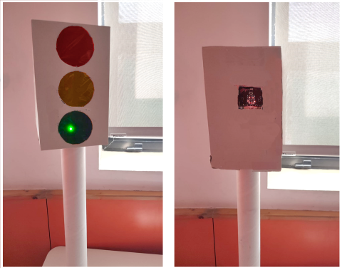
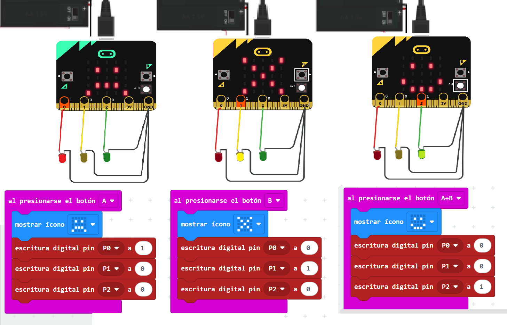
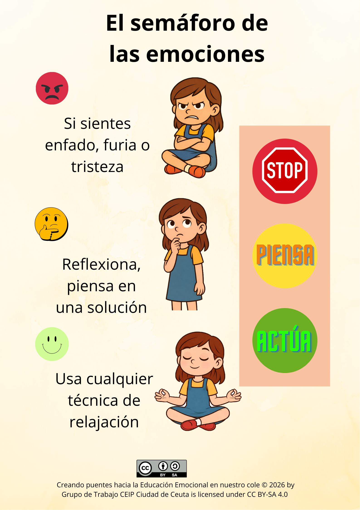
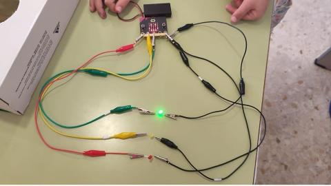
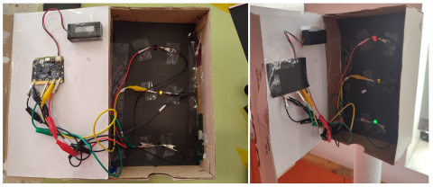

El semáforo de las emociones

Creando puentes hacia la Educación Emocional en nuestro cole © 2026 by Grupo de Trabajo CEIP Ciudad de Ceuta i. Semáforo de las emociones programado con microbit

Creando puentes hacia la Educación Emocional en nuestro cole © 2026 by Grupo de Trabajo CEIP Ciudad de Ceuta . Programación microbit (CC BY-SA)

Creando puentes hacia la Educación Emocional en nuestro cole © 2026 by Grupo de Trabajo CEIP Ciudad de Ceuta i. Técnica del semáforo (CC BY-SA)

Creando puentes hacia la Educación Emocional en nuestro cole © 2026 by Grupo de Trabajo CEIP Ciudad de Ceuta . Tarjeta microbit y luces led (CC BY-SA)

Creando puentes hacia la Educación Emocional en nuestro cole © 2026 by Grupo de Trabajo CEIP Ciudad de Ceuta. Semáforo de las emociones con microbit (CC BY-SA)